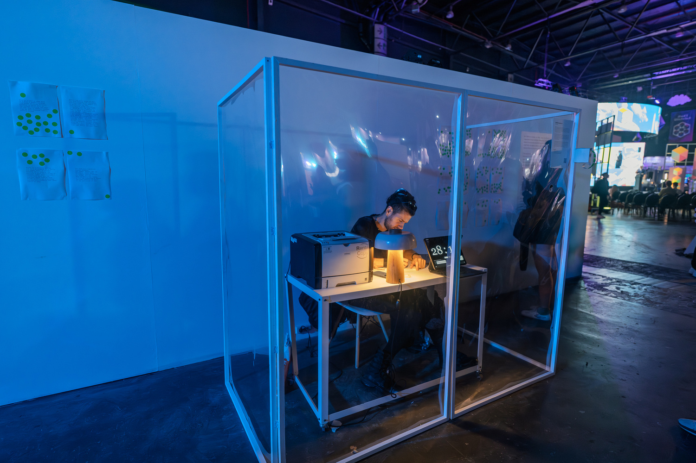
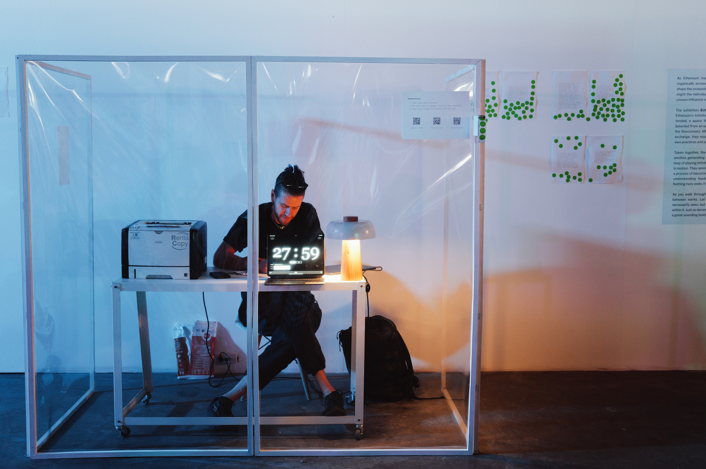
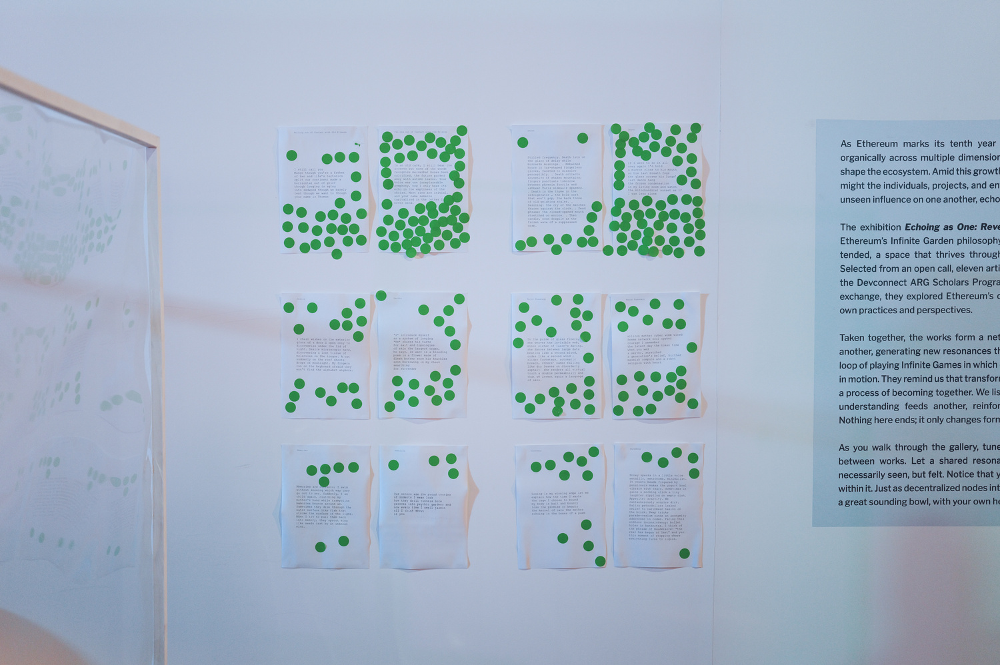
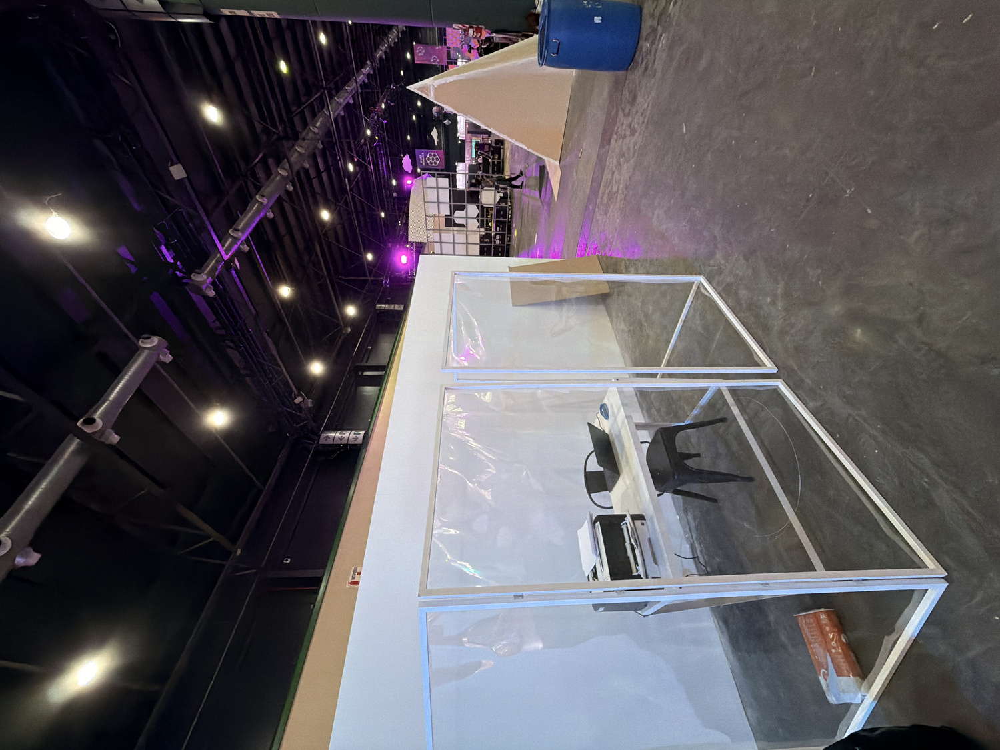
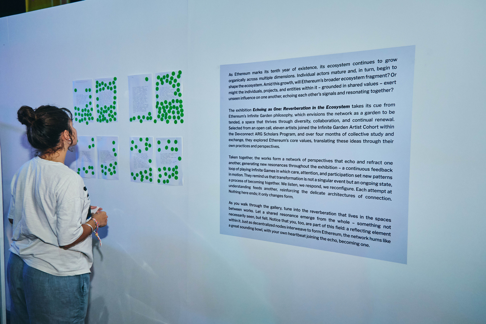
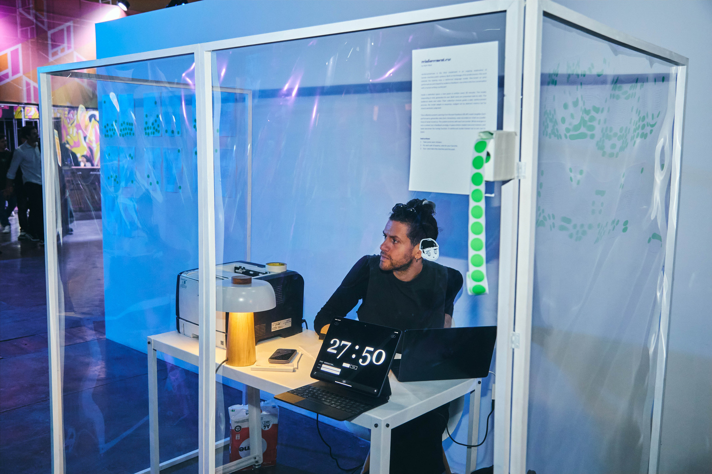
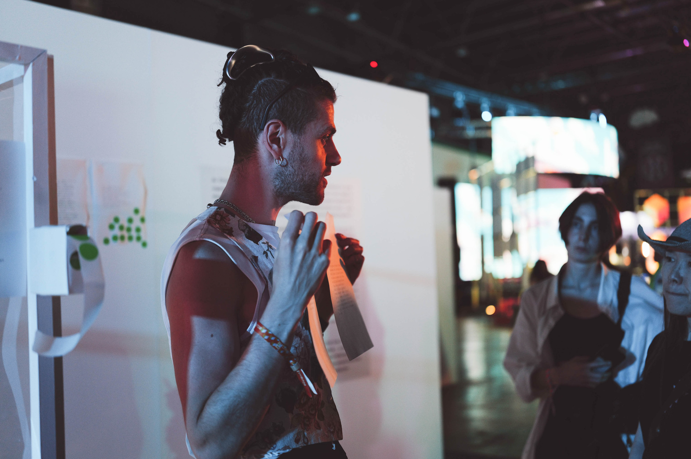
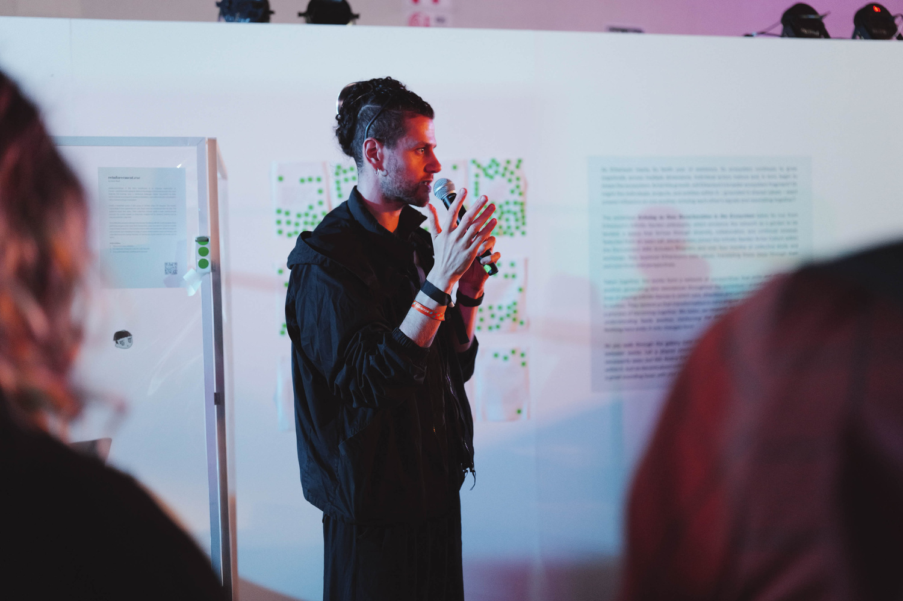
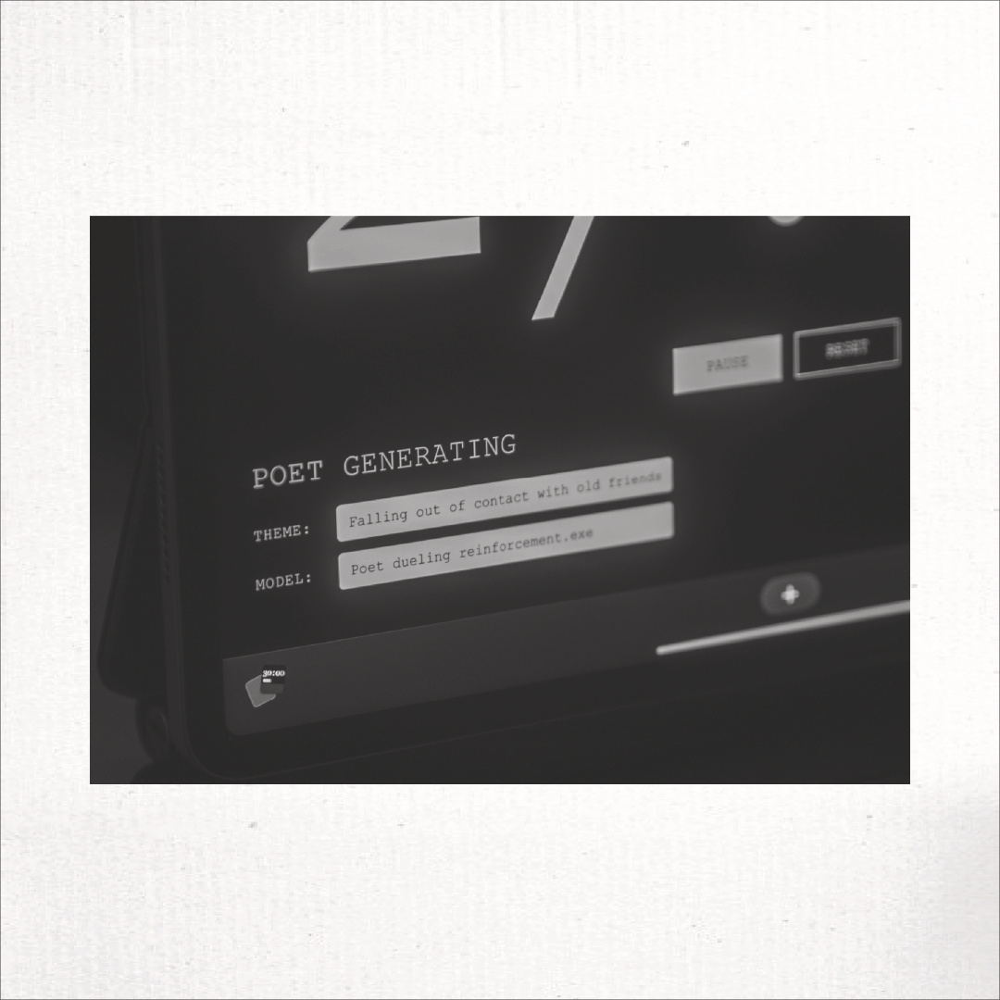

Reinforcement.exe

Reinforcement.exe takes place inside an open cube. The poet enters as if stepping into a small world carved out of time. For two hours each day, they write a new poem every thirty minutes. No breaks. No drift. A metronome of attention. A ritual of effort. The machine waits beside them, training on the growing archive of their voice.
Each cycle begins with a blank page. The poet writes. The model generates its answer. Two texts emerge from the same seed. Both are printed on warm paper and placed before the audience like offerings. Red stickers mark the machine. Blue stickers mark the human. The votes pile up in patterns that feel almost biological. A cluster of red. A cluster of blue. A cluster of confusion where the votes intermingle.

These stickers are not decoration. They are reinforcement. They sculpt the machine by telling it what pleases. They sculpt the poet by telling them where their craft falters. The loop tightens each day. The model evolves through gradients of approval. The poet evolves through gradients of shame and surprise. A small crowd becomes the unseen trainer of both.




Reinforcement.exe is part of the ARG Ethereum Scholar Program. It unfolds in Buenos Aires during DevConnect, surrounded by technologists, coders, cryptographers, dreamers, skeptics, and the hum of a city that treats invention as a kind of hunger. The project remains ongoing, a continuous experiment in living feedback. A performance that refuses to end at the level of spectacle. The cube becomes a workshop, a pressure chamber, a small factory where taste is forged in public.

Inside the cube, something subtle breaks open. The poet begins to see their own gestures reflected back at them in strange distortions. A line they wrote four days earlier returns in the mouth of the model wearing a new mood. A metaphor they abandoned resurfaces sharpened. Sometimes the machine writes the better poem. Sometimes the human does. The point is not victory. The point is the slow emergence of a third voice produced by collision.

There are moments of humiliation. The poet writes for half an hour and the model generates something cleaner. Something colder. Something that hits the room with unexpected force. The poet wonders why they keep doing this. Why they spend hours feeding a system that keeps learning faster than they can. Then the answer arrives. This is the medium. Fine tuning as composition. Reinforcement as choreography. A poem built through many acts of judgment.



The work becomes even stranger when the poet tries to push the model beyond politeness. They learn to tune it into states of trembling. They whisper prompts that ask it to go wild, to seek salvation in the lexicons of the poets it once skimmed, to reject citation, to stand on its own voice. The softmax shifts. The temperature climbs. Something new arrives on the page that feels half metal and half breath.
Printed poems pile up. Sheets accumulate like sedimentary layers of a psychological dig. A dashboard records the votes. The losses. The brief victories. The micro oscillations of style. Once in a while the poet stops and sees the stack of poems the machine has absorbed. A clone growing in real time. Not money laundering for copyrighted text but a form of explicit self replication. The poet teaches the machine to sound more like them. Then the machine teaches the poet to sound more like someone who can survive the future.
Reinforcement.exe belongs to the same lineage as Carnation.exe and Versus.exe. Together they form Singulars, a long inquiry into what it means for a human and a machine to share a craft. Each installment approaches the question from a different angle. Confrontation. Comparison. Training. Each reveals how influence flows in both directions. The human is not replaced. The machine is not crowned. Instead there is a slow emergence of a hybrid aesthetic shaped by contact.
There is a line the poet returns to often. Half flesh half metal. Half iron half heart. It feels like the secret skeleton of Reinforcement.exe. A reminder that the point is not to prove who writes better. The point is to witness how two intelligences can change one another when placed in a loop of attention. What endures is the trace of each vote. The warmth of each printed page. And the slow awakening of a style held between two minds.